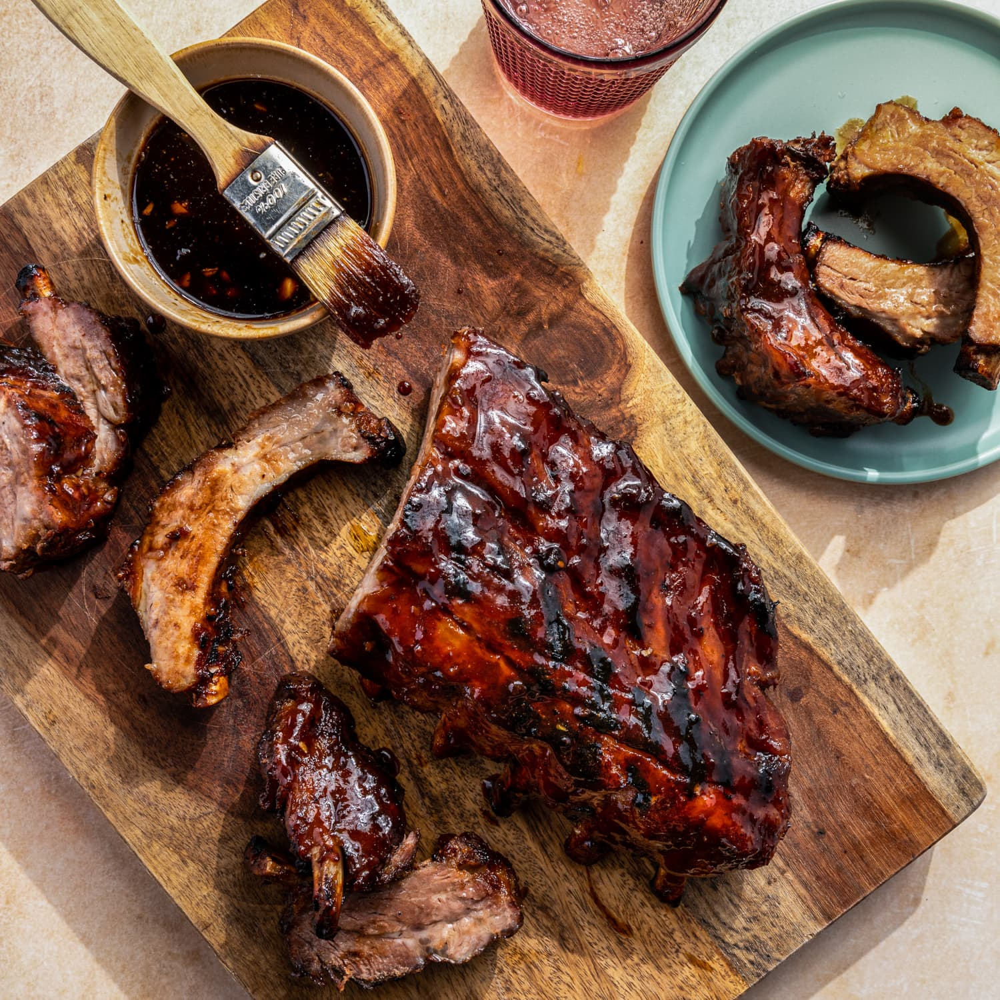

Instant Pot Baby Back Ribs

Cook baby back ribs in an Instant Pot with this quick way to make fall-off-the-bone ribs!
These baby back ribs are meaty and lean while still being delightfully tender.
Ingredients
- 2 tablespoons kosher salt
- 1 tablespoon brown sugar
- 1 tablespoon chili powder
- 1 tablespoon paprika
- 2 teaspoons garlic powder
- 1 ½ teaspoons cayenne pepper
- 1 teaspoon ground black pepper
- 1 rack baby back pork ribs
- 1 cup beef broth
- ¼ cup barbeque sauce, or as needed
Directions
- Combine kosher salt, brown sugar, chili powder, paprika, garlic powder, cayenne pepper, and black pepper in a small bowl.
- Cut rack of ribs into 4 equal portions. Rub all sides of each piece with spice mixture.
- Pour broth into a multi-functional pressure cooker (such as Instant Pot). Add ribs in a teepee formation. Close and lock the lid.
Select high pressure according to manufacturer's instructions; set timer for 30 minutes. Allow 10 to 15 minutes for pressure to build.
- Preheat the oven to 425 degrees F (220 degrees C). Line a baking sheet with aluminum foil.
- Release pressure carefully using the quick-release method according to manufacturer's instructions, about 5 minutes.
Unlock and remove the lid. Transfer ribs to the prepared baking sheet. Brush ribs on all sides with barbeque sauce.
- Bake in the preheated oven for 7 minutes. Turn ribs and continue baking until meat pulls away easily from the bone, about 7 minutes more.
An instant-read thermometer inserted into the center should read 145 degrees F (63 degrees C).